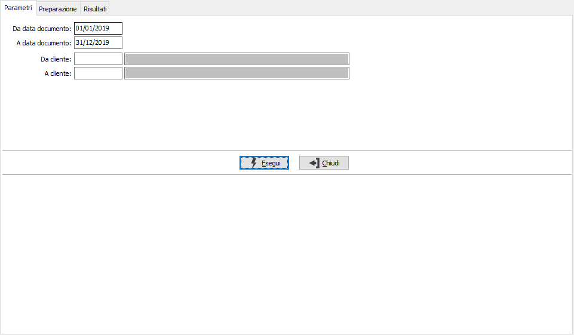
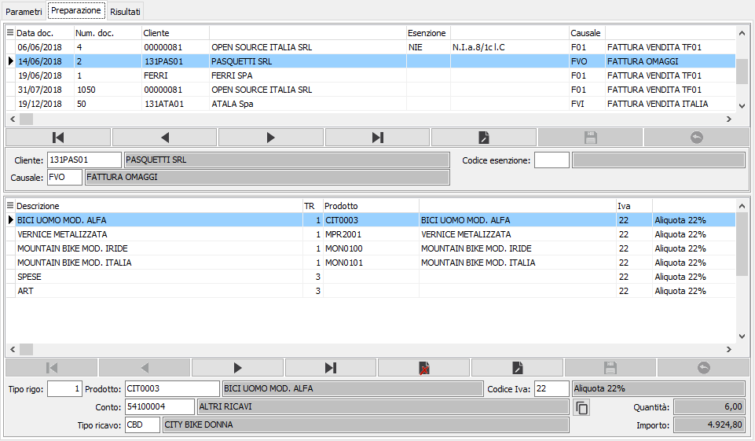
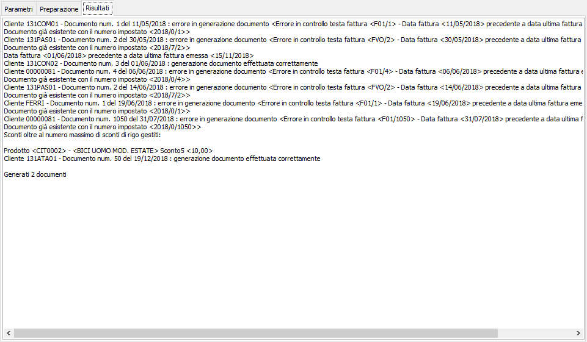

Generazione documenti da fatture XML
Tramite questa procedura è possibile generare le fatture importate da OS1BoxFatture come fatture di vendita di OS1. Nei parametri sono richieste obbligatoriamente le date dei documenti da elaborare, è possibile inoltre indicare come parametro di selezione il cliente.

Nell’elenco vengono visualizzati tutti i documenti che risultano non ancora importati in OS1. Nella linguetta “Preparazione” vengono proposti i dati come indicato nel paragrafo “Manutenzione fatture acquisite” presente nel manuale operativo del BoxFatture, la maschera è divisa in due sezioni, quella superiore che contiene i dati di testa e quella inferiore che contiene i dati di rigo. Nei dati di testa, sul cliente è presente il codice cliente assegnato, è attiva la ricerca dei clienti ed è possibile assegnare un cliente con la stessa partita Iva presente sul file XML. Sulla causale è presente lo zoom delle causali di OS1. Modificando il codice esenzione viene richiesto se assegnare il nuovo codice Iva sulle righe su cui era presente il codice esenzione originale (presente prima della modifica).
Nei dati di rigo è possibile modificare tutti i campi presenti sulle righe mentre è possibile eliminare solo le righe che non hanno associazioni con il prodotto OS1. In fase di modifica dei dati sono presenti controlli di coerenza tra tipo rigo, articolo e aliquota Iva. Tramite il bottone accanto al sottoconto è possibile assegnare il conto di ricavo presente sul rigo a tutte le righe del documento su cui siamo posizionati.

In fase di salvataggio dei dati vengono segnalate eventuali incoerenze, come ad esempio la mancata compilazione dell’articolo per i tipi rigo che prevedono la gestione dell’articolo o dell’aliquota Iva per le righe con importo, confermando sull’errore si viene automaticamente posizionati sul rigo del documento su cui tale errore si verifica per poterlo sistemare e procedere con la registrazione. Salvando la preparazione viene richiesto se effettuare la generazione dei documenti, confermando vengono visualizzati i documenti salvati ed eventuali errori per cui non è stato possibile effettuare il salvataggio del documento.
